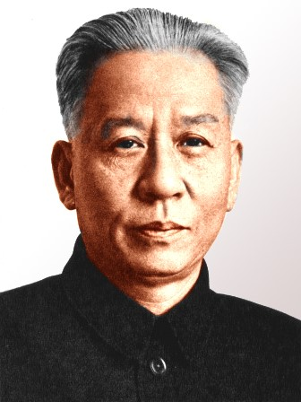

刘少奇
刘少奇（1898—1969），伟大的马克思主义者，中国共产党和中华人民共和国的卓越领导人之一，曾任国家主席。他为中国革命和建设事业作出了不可磨灭的贡献。
刘少奇的一生以坚定的理想信念和实事求是的作风著称。他深入工人运动，积极推动党和国家的制度建设，始终把人民利益放在首位。他在党的建设、经济发展以及社会治理等方面提出了许多重要思想。
在家风方面，刘少奇以严格的家教和清廉的作风闻名。他教育子女要自立自强，不搞特殊化，不享受特权，强调做人要诚实、正直、勤俭。他的家风体现了共产党人的高尚情操和无私精神。
刘少奇的精神和家风深深影响了后人，成为红色家风的重要典范。在河北及全国范围内，他的事迹和精神常被作为廉政教育、家风建设的重要教材。
← 返回中国地图